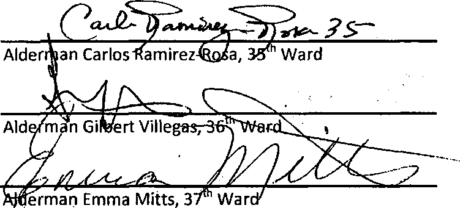

Chapter 2-57 INDEPENDENT CITIZEN POLICE MONITOR
2-57-010 Definitions.
The following terms wherever used in this chapter shall have the following meanings unless a different meaning appears from the context:
a)
Independent Citizen Police Monitor (also referred to throughout this chapter as "Monitor"), which shall include the Chief Administrator of the Monitor and such deputies, assistants and other employees as required in order to ensure that the Monitor can exercise the duties described throughout this ordinance in a thorough, timely and unbiased manner.
b)
Chief Administrator means the chief administrator of independent citizen police monitor or a designated representative.
c)
Coercion means the use of express or implied threats of violenee that put a person in immediate fear of the consequences in order to compel that person to act against his or her will.
d)
Department means the Chicago department of police.
e)
Police Board means the police board established by Chapter 2-84 of this code, as amended.
f)
Superintendent means the superintendent of police or his or her designated representative.
g)
Verbal abuse means the use of a remark which is overtly insulting, mocking or belittling directed at a person based upon the actual or perceived race, color, sex, religion, national origin, sexual orientation, disability, mental illness or gender identity of that person.
h)
Excessive force means an officer's use of force against an individual, whether the officer was on duty or off duty, where, under the circumstances, the use of force or the extent of the force was unjustified.
i)
Sexual misconduct means any form of unwelcome behavior of a sexual nature that is
committed by a department member against a civilian.
j) Domestic violence means physical abuse, harassment, stalking, intimidation or violations of orders of protection (or similar court orders) involving a sworn officer's family or household member. Family or household member means spouses, former spouses, parents, children, stepchildren, persons who share or formerly shared a common
1
dwelling, persons who have or who are alleged to have a child in common, persons who have or have had a dating or other significant relationship, persons with disabilities and their personal assistants and caregivers.
k) Biased police practices means policies and practices that result in police offering less robust services, or providing less protection to certain victims, on the basis of gender, sexual orientation, gender expression, immigration status, race, ethnicity, religion or failing to respond to crimes that disproportionately harm a particular group of people
1) Suspicious injury means any injury to the head, mouth, face, hose, back, groin, genitals, including, but not limited to, black eyes, bruising to the mouth, broken noses, broken and/or sprained shoulders, ankles and/or wrists. Tt also includes a death or injury to a person as a result of an interaction with a police officer, including a motor vehicle accident, or a death/injury that was sustained while in police custody or in a police lockup facility.
m) Summary Report of investigation means a report prepared within 5 business days after the conclusion of each investigation. A summary report shall contain the following information: Investigation log number; for each accused and witness officer: name(s), rank, unit of assignment, gender, race, year of birth, whether the officer was on duty, date of appointment to the Department, and any injuries suffered by the officer; the available demographics of any civilian complainant and witness; injuries sustained by any civilian; a description of the initial incident, including the date and time; the location, and a summary of the incident; a summary of the investigation, including the steps taken to obtain each piece of evidence and a summary of the evidence; and conclusions and findings, including any disciplinary recommendations.
n) Investigative Category refers to the types of incidents the Monitor is empowered to investigate. The investigative categories are: domestic violence; excessive force; false arrest; illegal search or seizure; coercion; rape, sexual assault, or sexual misconduct; First Amendment violations; detention violations, including denial of access to an attorney or phone; other Fifth Amendment violations; verbal abuse; biased police practices; conduct that injures or kills an animal; the discharge of a firearm, the discharge of a stun gun, Taser, O.C. or pepper spray, or use of any other weapon, such as a baton, that police use to inflict pain or induce compliance; and conduct that results in a civilian sustaining a suspicious injury after an interaction with a Department member. The incidents in these investigative categories shall fall under the Monitor's jurisdiction.
o) Demographics refers to an individual's race, ethnicity, gender, age, and whether the individual voluntarily self identifies as Lesbian, Gay, Bisexual Transgcnder, Queer and/or Gcnder-non-conforming.
2-57-020 Establishment and composition of the Monitor.
There is hereby established an office of the municipal government to be known as the independent police review authority Independent Citizen Police Monitor (referred to throughout this chapter as "Monitor"), which shall include the Chief Administrator of independent police review the Monitor and such deputies, assistants and other employees as may be provided for in the annual appropriation ordinance required in order to ensure that the Monitor can exercise the duties described throughout this ordinance in a thorough, timely and unbiased manner. The offices of the independent police review authority Monitor shall be located in a facility outside of the department of police.
The current Chief Administrator of the Independent Police Review Authority shall serve as the interim Chief Administrator of the Monitor's Office until a permanent Monitor is selected through the process described in 2-57-030 below.
90 days after this Ordinance goes into effect, the Independent Police Review Authority shall cease to exist and the Monitor shall assume all duties formerly executed by the Independent Police Review Authority.
2-57-030 Process for selecting the chief administrator.
The Chief Administrator shall be the chief executive officer of the independent police review authority Monitor. The process for selecting the Chief Administer shall be as follows:
(1) A selection committee will be established to conduct a 90-day nation-wide search to identify and interview qualified candidates for the position. The Inspector General for the City ofChicago shall appoint the members of the Selection Committee which shall be comprised of:
a.
Four individuals representing civil rights, activist and organizing groups that focus on issues relating to young people, African-Americans, Latinos and their interactions with the police;
b.
One individual representing an organization that the focuses on the rights of immigrants;
c.
One individual representing an organization that focuses on the rights of the Lesbian, Gay, Bi-sexual, Transgender, Queer community.
d.
One individual from the faith based community, who has experience with police-community interactions;
e.
One individual representing the Chicago Plaintiffs' Civil Rights Police Misconduct Bar
The Mayor or his/her designee, the Police Superintendent and his/her designee, and the City Council Police and Fire Committee Chairperson or his/her designee shall also serve on the Selection Committee.
The selection committee will receive administrative and logistical support from the Mayor's office and shall, at its first meeting, elect a chair person. The final top three candidates shall be identified by a majority vote of the committee by considering, at a minimum, the criteria outlined in 2-57-030 (2). Within 48 hours of the vote identifying the top three candidates, their names shall be made public and the candidates' application materials shall be posted on a city maintained website (after redacting any personal contact information and other private information such as social security numbers').
(2)
The Chief Administrator candidates shall exhibit the following qualifications to ensure that he or she is fair and impartial and is perceived as fair and impartial bv civilians and members of the Department:
a. The Chief Administrator shall not have previously been employed by the Department or the Cook County State's Attorney. . b. Integrity,
c.
Management skills,
d.
Ah ability to design and implement protocols that will result in fair and unbiased investigations,
e.
Knowledge of relevant law and law enforcement practices, and
f.
An ability to communicate with diverse constituencies including, but not limited to, people of all races, ethnicities, ages, immigrant or citizenship status, sex, sexual orientation, gender identi fication, law enforcement, members of the press and elected officials.
(3)
Within 30 days of their selection, the top three candidates will be required to attend at least 2 community meetings at times and locations to be determined by the selection committee. The selection committee shall ensure that the community meetings are widely promoted throughout the city. During these community meetings, the top three candidates shall present their qualifications and vision for civilian police oversight in Chicago. The meetings must include an opportunity for community members to ask questions of the top three candidates.
(4)
Prior to the community meetings described in (3), the selection committee shall establish a process for soliciting, analyzing and making public community feedback on the top three candidates.
(5)
Within 14 days of the last community meeting, the selection committee will, by majority vote, nominate a candidate to be presented to the City Council for confirmation. The appointment of the Chief Administrator is subject to confirmation by the full City Council by a majority vote at the next City Council meeting. In the event the City Council fails to confirm the selection committee's nominee, the selection committee will
have 5 days to identify a replacement candidate to be presented to the City Council for confirmation.
(6)
The Chief Administrator shall be appointed for a term of four years, or until his or her successor is appointed and approved by the selection committee. In the event that the chief administrator does not complete his or her four-year term, the Mayor shall, subject to the approval of the City Council, appoint an new interim Chief Administrator who shall serve in this position until the selection committee can complete the appointment process described above.
(7)
The Selection Committee, bv a majority vote, may opt to recommend that the City Council confirm the incumbent Chief Administrator for a second term. Prior to making such a recommendation, the Selection Committee shall develop a process for receiving and considering feedback from the general public on the issue of whether the incumbent Chief Administrator should be retained. This process shall include at least one public hearing. In the event that the Selection Committee opts to recommend the incumbent's retention. City Council must hold confirmation hearings, and during which there must be opportunity to consider public comment.
2-57-040 Chief Administrator—Powers and duties.
In addition to other powers conferred herein, the Chief Administrator shall have the following powers and duties:
(1)
To provide the people of Chicago and their police officers a fair and impartial system for the investigation of civilian police complaints arid other instances of police conduct as described more fully below and to ensure that all investigations employ a preponderance of the evidence standard when determining whether a Department officer violated policy and/or engaged in an act of misconduct;
(2)
To conduct investigations into incidents that include any complaint against members of the Department concerning domestic violence, excessive force, illegal search or seizure, false arrest, coercion, and verbal abuse, rape, sexual assault, sexual misconduct. First Amendment violations, denial of access to an attorney, phone, family member, or other visitor while in police custody, other Fifth Amendment violations, biased police practices, or unjustifiably killing or injuring an animal;
(3)
To conduct investigations into the conduct of members of the Department concerning any investigative category, even in the absence of a civilian complaint, when, based on information and belief, the Chief Administrator determines such investigation is warranted;
(4)
To conduct investigations into all cases in which a Department member discharges and/or uses his or her firearm, stun gun, ef Taser, or any other weapon police use to inflict pain and induce compliance in a manner which potentially could strike an individual even if no allegation of misconduct is made;
(5)
To conduct investigations in all cases in which a civilian dies and/or sustains a suspicious injury or anv injury that requires medical attention in police custody or as a result of an interaction with the police, even if no allegation of misconduct is made, to identify these instances through a review of the Department's tactical response fuse of force) reports and when possible, through information sharing agreements negotiated with relevant entities, including, but not limited to, the Cook County Jail, the Cook County Public Defender's and State's Attorney's Offices, and the Illinois Department of Corrections;
(6)
To conduct investigations into cases where the death of a person or an injury sustained by a person occurs while in police custody or where an extraordinary or unusual occurrence occurs in lockup facilities, even when no allegation of misconduct is made;
(7)
To investigate the facts stated in all lawsuits that allege a member of the Department engaged in excessive force, sexual misconduct, a false arrest, or illegal search or seizure, and/or committed another civil rights violation or tort. The Chief Administrator shall not require that civilian plaintiffs in such litigation submit a sworn complaint prior to launching an investigation; review ail cases settled by the department of law in which a complaint register was filed against a member of the department, and if, in the opinion of the chief administrator, further investigation is warranted, to conduct such investigation
(8)
To investigate any other violation of police Rules and Regulations, policies and procedures, or the United States Constitution that may have occurred in any incident under investigation by the Monitor;
(9)
Taforward all other complaints incidents which are unrelated to the Monitor's jurisdiction to the Department's Bureau of Internal Affairs appropriate oversight entity;
(10)
To make recommendations to the Superintendent concerning the appropriate disciplinary action against members of the Department found to be in violation of Department rules and regulations and to monitor, track and publicly report on the basis and outcomes of these recommendations, including any discipline actually imposed;
(11)
To request information related to an investigation from any employee or officer of the city and to execute information sharing agreement;
(12)
To issue subpoenas to compel the attendance of witnesses for purposes of examination and the production of documents and other items for inspection and/or duplication. Issuance of subpoenas shall be subject to the restrictions contained in Section 2-57-050;
(13)
To compel prompt statements from members of the Department and to re-interview Department members as needed;
(14)
To collect and preserve physical evidence related to matters under investigation by the Monitor;
(15)
To compel members of the Department to immediately submit to tests for substances, physical evidence, and DNA, including, but not limited to, breath, blood, urine, and DNA tests.
(16)
To conduct investigations concurrently with any criminal investigation that may result from a matter under investigation by the Monitor;
(17)
To address police personnel and community groups on regulations and operations of the independent police review authority; and
(18)
To promulgate all rules, regulations, information sharing agreements, and procedures necessary to comport with the Chief Administrator's duties and the purpose of this ordinance.
(19)
To play an active role in the community, perform community outreach, publicize the civilian complaint process, and identify locations within that are suitable for civilians to file complaints online, via the telephone, and in community-based environments free from police presence;
(20)
To analyze policing trends and patterns related to the monitor's investigative jurisdiction, including but not limited to: officer use of force; police shootings; use of Tasers or any weapon used to inflict pain and/or to gain compliance; citizen complaint log numbers; and racial, ethnic, gender, sexuality, or geographic biases in policing;
(21)
To propose written recommendations related to the Monitor's investigative jurisdiction to the Department, the Police Board, the Mayor, City Council, and other relevant governmental entities concerning changes to policies, procedures, practices, directives, supervision, training, and equipment to create greater efficiency, fairness, and transparency in policing services and oversight;
(22)
To recommend additional training or supervision of particular officers who participated in incidents that triggered the Monitor's investigations;
(23)
To conduct regular analyses of citizen complaints, use of force, lawsuits, and other relevant data to identify individual and groups of officers who may be engaged in a pattern of misconduct, and to initiate disciplinary investigations into the conduct of those identified officers;
(24)
To examine the disciplinary and complaint history and relevant complaint investigative files as a standard, required part of every disciplinary investigation for each officer who had a material role in any incident that triggered an investigation;
(25)
To conduct Force Analysis Panels with the Department and any auditors or community oversight entities after investigations into shootings and other major uses of force that do not result in sustained findings in order to determine if they reveal any systemic deficiencies in training, policy, supervision, or equipment. The Monitor shall present any
7
such deficiencies to the Department during the Force Analysis Panels and publish its recommendations from those Panels on its website within 5 business days;
(26)
To maintain and regularly update a website that makes public the information described in this ordinance and to identify and execute other methods of widely disseminating to the general public information about the work of the Monitor;
(27)
To administer the office including, but not limited to, the hiring, terminating, training, and supervision of all employees in conformity with the requirements of this ordinance;
(28)
To maintain permanent in-house legal counsel to advise the Monitor on legal issues and to represent the Monitor's Office in legal and administrative proceedings, including those to enforce the Monitor's subpoenas, and to prosecute or defend the Monitor's investigative, disciplinary, and policy recommendations; and
(29)
To ensure that the office of the Monitor functions as independently as possible from the executive and legislative branches of government of the City of Chicago.
2-57-050 Independent Citizen Police Monitor Budget, Staffing, and Independent Evidence Analysis Requirements
Each fiscal year, the City Council shall appropriate an amount-thatshall not be less than oneand-a half percent (1.5%) of the annual appropriation of the Department available to pay for the expenses of the Monitor. The Monitor's office must maintain at least one full-time investigator for every 100 sworn officers in the Department.-
Investigators employed by the Monitor may not have previously been employed by the Department and/or the Cook County State's Attorney. Investigators should broadly represent the diversity and demographics of the City by way of, including but not limited to, racial, ethnic, gender, and geographic diversity.
2-57-060 Policy Recommendations
On an annual basis, the Monitor must publish a written report describing any recommended modifications to Department and Police Board policies, procedures, practices, directives, supervision, training, and equipment, that are related to the Monitor's investigative jurisdiction and executed pursuant to the Monitor's duties specified in Section 2-57-040 ( ) above. This report shall also include any recommended changes to the Monitor's own policies, procedures, training, resources, and powers, including any recommended amendments to this ordinance that would improve the Monitor's ability to conduct prompt, high quality, thorough, and unbiased investigations that are transparent to the public.
The Monitor shall publish the Policy Recommendation Report on the Monitor's website within 5 business days of completion.
Notwithstanding the Monitor's annual Policy Recommendation Report, the Monitor may make policy, procedure, training, supervision, and equipment recommendations to the Department at any time, and shall publish those recommendations on the Monitor's website within 5 business days of submitting its recommendations to the Department. The Superintendent must issue a written response to each of the Monitor's recommendations to the Department within 30 days of receipt, stating whether the Department will accept the recommendation. Ifthe Superintendent accepts the recommendation^ he or she must submit a written plan, including a timetable for implementation. The Monitor shall publish the written plan in a publicly accessible area of the Monitor's website within 5 business days of receipt.
If the Superintendent declines to implement the policy recommendation, he or she must submit to the City Council Committee on Public Safety and the Monitor, in writing, the reason for rejecting the recommendation within 30 days of receipt of the recommendation. The Monitor shall publish the written reason in a publicly accessible area of the Monitor's website within 5 business days and document it in the Monitor's annual report.
2-xx-xxx Proactive Policy and Pattern Analysis and Investigations
The Chief Administrator shall appoint a full time employee as Director of Policy and Practice Analysis and Investigations to analyze policing trends and patterns related to the Monitor's investigative jurisdiction and to launch disciplinary investigations into Department members who may demonstrate a pattern of misconduct and/or non-compliance with Department policy. The Monitor has the discretion to treat as confidential any proactive disciplinary investigation initiated and supervised by the Director of Policy and Practice Analysis and Investigations, and his or her staff, for as long as the Monitor deems necessary during the investigation.
2-xx-xxx Community Input, Engagement and Outreach
. The Chief Administrator shall appoint a full time employee as Director of Community Engagement to develop and implement a program of community outreach aimed at soliciting public input about police practices and the work of the Monitor from a broad segment of the community in terms of age, race, gender, gender expression, sexual orientation, neighborhood, ethnicity, and socio-economics. The Director of Community Engagement will also be responsible for assisting the Chief Administrator to widely disseminate information regarding the activities of the Monitor including information about how individuals can file complaints, the investigative process, know-your-rights-training aimed at informing individuals about the types of police conduct the Monitor is authorized to investigate, and information about the policy audit and data collection activities undertaken by the Monitor. The Director of Community Engagement shall be responsible for ensuring that the Monitor holds at least four community meetings annually.
The Chief Administration shall appoint staff sufficient to ensure that all civilian complaints are assigned a complaint support specialist, who shall provide support to civilians throughout the complaint and investigative process. Such support services shall include, but are not limited to providing complainants with regular updates regarding the status of their complaints, counseling complainants regarding the investigative process and outcomes, and providing referrals to outside service providers whenever necessary.
As a part of the Director's duties, he or she shall develop a civilian feedback process that seeks feedback from civilians who interact with the Monitor on their experiences, including, but not limited to, their overall satisfaction with the process, their ability to access information from the Monitor, their treatment throughout the investigation, the investigator's sensitivity to their circumstances, and the ease with which they could make a complaint. The feedback process shall also seek suggestions to improve the civilian's experience. The Director shall publish the results of those surveys in the Monitor's annual report. . ;
2-57-050 Subpoena Issuance and Evidence Preservation.
The Chief Administrator, or his or her designee, may administer oaths and secure by its subpoena both the attendance and testimony of witnesses and the production of relevant information including, but not limited to, any document maintained by the Department or other agency. A subpoena shall be served in the same manner as subpoenas issued under the Rules of the Illinois Supreme Court to compel appearance of a deponent, and subject to the same witness and mileage fees fixed by law for such subpoenas.
A subpoena issued under this chapter shall identify the person to whom it is directed and the documents or other items sought thereby, if any, and the date, time, and place for the appearance of the witness and production of the documents or other items described in the subpoena. In no event shall the date for examination or production be less than seven days after service of the subpoena. The Chief Administrator shall have the authority to enforce any subpoena issued by the Monitor by bringing a cause of action in the appropriate court.
The Department and other City agencies, such as the Office of Emergency Management Communications, are prohibited from destroying anv evidence related to any incidents that may fall under the Monitor's jurisdiction for investigation, and the Department and other City agencies must take proactive measures to preserve all such'evidence.
2-57-060 Decisions; r^e^Hnmendations-disciplinary guidelines.
When an investigation has substantiated that a Department member engaged in
misconduct and/or violated Department policy and/or any applicable law, the Chief Administrator shall recommend discipline for that Department member. The Chief Administrator
10
has the discretion to recommend discipline and/or additional training and supervision for any Department member who participated in an incident that triggered a Monitor's investigation. However, the Chief Administrator and Superintendent shall move to terminate any Department member who lies or otherwise knowingly gives false information in an investigation.
a) If the Chief Administrator issues a recommendation of discipline against one or more members of the Department, the Superintendent must respond to such recommendation in writing within 90 14 days. The response must include a description of any disciplinary action the Superintendent has taken with respect to the member in question.
b)
If the Superintendent did not take any disciplinary action, or takes a greater or lesser disciplinary action than that recommended by the Chief Administrator, the Superintendent must describe the proposed different action arid explain the reasons for the different action in the written response. The Superintendent's response shall include, but is not limited to, the following reasons for taking a different action:
(i)
an analysis of the employee's work history, including any prior disciplinary actions, any prior complaints filed against the employee* and/or any prior complimentary history;
(ii)
the superintendent's professional opinion with regard to the case;
(iii)
the existence of any lawsuits arising out of the performance of police duties to which the employee has been a named party, and the outcome of such lawsuits, including those in which the employee has been exonerated; and
(iv)
any evidentiary concerns with regard to the investigation.
c)
The Superintendent must submit his or her written response to the Chief Administrator within the 14 90-day decision period. Within ten business days after the submission of a response letter which proposes more or less discipline than that recommended by the Chief Administrator, the Superintendent and the Chief Administrator shall meet to discuss the reasons for the Superintendent's actions. Ifthe Chief Administrator does not concur with regard, to the Superintendent's reasons for the differing disciplinary action, the Chief Administrator shall, within five business days, send the Superintendent's response, along with the Chief Administrator's objections, to a separate panel consisting of three persons who shall be designated by the police board or the selection committee from its membership.
d)
The three-member panel shall, within ten business days of receipt, review the Superintendent's response and the Chief Administrator's objections. Upon the request of the three-member panel, the Superintendent and the Chief Administrator may be required to present additional documentation or present oral arguments in support of their positions. I f the Superintendent's response does not meet its burden of overcoming the Chief Administrator's recommendation for discipline, in the opinion of the majority of the three-member panel, the
recommendation shall be deemed to be accepted by the Superintendent. Such members of the panel shall then recuse themselves from any future involvement with such case by the full police board.
e)
No action of the Superintendent which proposes to take less discipline than that recommended by the Chief Administrator shall be valid until the provisions of subsection (c) of this section are followed.
f)
If the officer fails to respond to the recommendation within the 10-day decision period, such recommendation shall be deemed to be accepted by the officer and be forwarded to the Superintendent to impose.
g)
Nothing in this section shall limit the Superintendent's ability to impose any additional discipline than that recommended by the Chief Administrator.
h)
Counsel for the Monitor shall have primary responsibility to represent the
Monitor in any proceeding in which an officer or the Department challenges the
investigative or disciplinary findings of the Monitor.
i)
• The Monitor shall publish on its website within 5 business days each of the
following: 1) its investigative and disciplinary recommendations; 2) the Superintendent's written response to the Monitor's recommendations; 3") the Monitor's and Superintendent's submissions to the three-member panel of the police board; and 4) the police board's decision.
Time Frame for Investigations «
The Chief Administrator will ensure that all investigations commence immediately after complaints are filed or an incident triggering an investigation occurs and proceed as expeditiously as possible. If an investigation exceeds 6 months, the Chief Administrator must notify the Mayor's office, the City Council Committee on Public Safety, the complainant (if applicable), and the employee named in the complaint or his or her counsel of the general nature of the complaint of information giving rise to the investigation and the reasons for failure to complete the investigation within 6 months.
mittee on
tCx vvul inct
nd-the
tf the chief administrator does not conclude an investigation within six months after its
t~\r\ 11 ntin fit*f* thp pniyinkiirvint nnH triA £*fnt?t\c\~\'i^t^ nnrv*>a/i in iii^ fr\ LTWilt;™ ttilvl 1.1 LC, U1C UttrtlLMtilllcult^tlriCI tot^CinLrttJ yCC ttcUIlCv* lit tt tC C?\7
vtt L11C gdlCI ill1 Id till C \J I ti IC Ut'i 11 L/tltit 11 Ut iJllv/rl I Ictt i v/t 1 ^TvTrrg rlzrCIKJ
reasons for failure to complete the investigation within six months.
2-57-080 Cooperation in investigations.
It shall be a condition of employment for every officer, employee, department, and agency of the City to cooperate with the Chief Administrator in any investigation or hearing undertaken pursuant to this chapter, including promptly making themselves available for interviews, re-interviews, and any testing for evidence or substances at the request of the Monitor. Any employee or appointed officer of the City who violates any provision of this section shall be subject to recommended for discharge (or such other discipline as may be specified in an applicable collective bargaining agreement) in addition to any other penalty provided in this chapter.
2-57-090 Retaliation prohibited—Penalty.
No person shall retaliate against, punish, or penalize any other person for complaining to, cooperating with, or assisting the Chief Administrator in the performance of his or her office. Any person who violates the provisions of this section shall be subject to a fine of not less than $5,000.00 and not more than $10,000.00 for each violation and shall be immediately recommended for discharge.
The Superintendent and the Chief Administrator shall together promulgate policies and directives to protect Department members and employees from suffering any retaliation, punishment, or penalty for complaining to, cooperating with, or assisting the Chief Administrator in the performance of his or her office.
2-57-100 Final Summary Reports ■ Open to public inspection. Transparency.
All final summary reports of the independent police review authority shall be open to public inspection, except to the extent that information contained therein is exempted from disclosure by the Illinois Freedom of Information Act, collective bargaining agreement, or any other applicable law.
It shall be the policy of the Monitor to make all of its work available to the public in order to promote accountability and transparency. The Monitor shall keep the public informed of its investigations and their progress, and the Monitor shall ensure transparency throughout the entire investigative process.
The Monitor must collect and post information on its website about pending investigations. Specifically, within 10 days of intake, the Monitor must publish on its website the information that triggered an investigation, including a copy of a civilian complaint, lawsuit, document reporting a suspicious injury, or a summary of any other information that triggered an investigation. The Monitor must regularly update both the complainant and the website as to the status of the investigation.
When the Superintendent rejects, disputes, or agrees with a finding or outcome recommended by the Monitor, the complete written explanation must be published on the
13
website along with the public investigation history. All such updates should also be published to a live timestamped data feed. All current and historic public information pertaining to all complaints or investigations must be accessible through a well-documented API or data feed (i.e.. Rich Site Summary, RSS) that conforms to open data standards
The Chicago Police Department shall maintain a database, to which the Monitor shall have full access, which contains the complete complaint and disciplinary history for each Department member. The database shall include, but is not limited to, the following for each member of the Department: 11 any and all police misconduct investigations; 2) complete disciplinary history; 3) all tactical response reports; 4) civil lawsuits and relevant motions to suppress in criminal cases; and 5.) assignment histories. At the Chief Administrator's request the database shall be expanded to include any other relevant information. The Monitor shall be provided full administrative access to all databases maintained by the Chicago Police Department.
In addition, the Monitor shall maintain full administrative rights to an electronic database that is independent from databases used by the Department. It shall maintain the data in a format that allows efficient exporting of data. These data shah be posted live on the Monitor's website in delimited machine-ready format for public inspection. The data sets shall redact the names and other identifying information of civilians, including complainants. The database must, at a minimum, include the information described throughout this section.
Within 10 days of its availability, the Monitor shall post on its website the following information for each investigation:
1)
The log or complaint number;
2)
The beat number in which the complaint incident took place;
3)
Location of incident reduced to hundred block;
4)
Date and time of the incident;
5)
Date the incident was reported to the Monitor and/or otherwise came to the Monitor's attention;
6)
Whether video of the incident exists;
7)
Date the investigation was completed;
8)
Name, race, and gender of the assigned Investigators), and date of Investigator's appointment in Monitor's office;
9)
For civilian complaints, whether the complaint was accompanied by a signed affidavit;
10)
For each Department member who is a subject of the investigation:
a.
Name;
b.
Badge Number;
c.
Unit of assignment at the time of complaint;
d.
Race;
e.
Gender;
f.
. Year of birth;
g.
Date of Appointment to the Chicago Police Department;
h.
Rank at the time of complaint;
i. On or off duty at time of incident; j. In police uniform or plain clothes;
k. Number of previous log numbers against officer within 10 years of incident;
1. Number of previous sustained log numbers against officer within 10 years of incident.
m. All complaint category codes for the incident under investigation; n. The Monitor's recommended outcome of the investigation for each
complaint (e.g., sustained, not sustained, unfounded, exonerated); o. The Monitor's recommended discipline;
p. The Superintendent's recommended outcome of the investigation of each complaint;
q. The Superintendent's recommended discipline; r. The final outcome of the investigation; s. The final discipline imposed;
11)
For each witness officer:
a.
Name;
b.
Badge number;
c.
Gender;
d.
Race;
e.
Year of Birth;
f.
Unit of assignment on date of complaint incident;
g.
Rank on date of complaint incident;
12)
For each civilian involved in an incident under investigation;
a.
Race;
b.
Gender;
c.
Age at time of complaint;
13)
In addition to the information detailed above, the Monitor shall also post the following information within 10 days of its availability in every investigation of a Department member's discharge or other use of a firearm, stun gun, Taser, or anv other device capable of inflicting pain or injury:
a. The type of incident (e.g., Taser, shooting with hits, shooting without hits, etc.);
b- The log number, "U" number, or any other tracking number used by the Monitor;
c.
For each shooting officer:
i.
The type of weapon used (if firearm, type and brand)
ii.
Number of shots fired;
iii.
The range at which the weapon was fired;
iv.
For Taser incidents, the duration that the device was deployed and the number of cycles;
d.
Injuries sustained by any officer on the scene;
e.
For each target or victim of the weapon:
i.
Type of animal targeted or victimized;
ii.
If person is targeted or victimized, the Monitor shall also post the individual's:
1.
Gender;
2.
Race;
3.
Age at time of incident;
4.
Any weapon possessed;
5.
The point at which any bullet impacted the subject;
iii.
Any medical care provided;
iv.
Injuries sustained;
v.
Whether person or animal was killed.
The Monitor shall also strive to post on its website any video of an incident that is the subject of its investigation, after redacting any parts capturing events within private areas, such as inside a person's home, or that would violate clearly established rights to personal privacy, within 48 hours of the incident, unless the release would seriously compromise the integrity of the Monitor's investigation. If the Monitor withholds video, she must"articulate and publish the reason for her belief that the release would seriously compromise the integrity of the investigation, and shall post the video as soon as possible after the 48-hour-period, but under all circumstances, the Monitor's posting of the video must occur within 14days of the incident.
The Monitor shall post on its website anv "911" records of records of police radio communications or data transmissions related to the incident within 10 days of their availability. The Monitor shall also release lab test results, police reports, and other information, after redacting any private material, so long as the release would not seriously compromise the integrity of the Monitor's investigation.
Within 10 days of completing each investigation, the Monitor must post on its website the summary report of investigation, and provide a copy of the summary report of investigation to any complaining witness.
Summary Reports for complaints that are not supported by an affidavit—if an affidavit is required by state law—must include a detailed record of anv attempts to contact the complainant to obtain an affidavit as well as a detailed record of the preliminary investigation, including anv attempts to obtain sufficient evidence to continue the investigation.
Notwithstanding any other provision of this ordinance, the Monitor is prohibited from releasing to the public the civilian names and identifying information without their consent. The Monitor shall provide any alleged victim in a sexual misconduct, sexual assault, rape or domestic violence investigation with the option to keep confidential the specific details of the complaint and specifics of the investigation from the Summary Reports made available to the public. The Monitor is otherwise authorized to release any additional information or data to the public regarding its investigations otherwise allowed by law.
The Monitor shall permanently retain and shall not destroy any records related to its investigations.
2-57-110 Quarterly reports to legislative nnd-cxeeutivc branches. Reports - Open to public inspection.
All reports, investigations, policies and procedures of the Monitor shall be open to public inspection, except to the extent that information contained therein is exempt from disclosure by the Illinois Freedom of Information Act, or any other applicable law. All investigations, audits, surveys, and policy evaluations and recommendations conducted by the Monitor shall be released publicly at the time of completion and will be published on the website of the Monitor's office and remain available on the website permanently. All data sets associated with each investigation, audit, survey, and policy evaluation and recommendation will be released publicly on the website of the Monitor at the time of the publishing of the audit. The data sets will remain on the website for at least 10 years from the date of publication, but in ho event may they be destroyed.
The Monitor shall issue an annual report. The annual report must include a detailed summary of the Monitor's activities during the year and shall include the following information:
1)
A summary report for each investigation completed during applicable time frame;
2)
A summary of all activities undertaken related to community input, engagement, and outreach, including the results of the customer feedback survey described above; arid
3)
A detailed annual statistical analysis that will help the general public understand the work of the Monitor. Wherever possible, the Monitor must aggregate the data by investigative category and the demographics of the involved civilians and Department members. The analysis shall include, but is not limited to, data related to the following:
a.
Total number of civilian complaints received;
b.
Total number of civilian complaints referred to internal affairs;
c.
Total number and type (e.g., excessive force, false arrest, illegal search, domestic violence, sexual misconduct, rape, sexual assault, coercion. First Amendment, denial of access to counsel, other Fifth Amendment, etc.) of investigations opened;
d.
Total number and type of investigations completed;
e.
Total number and type of investigations that remain open;
f.
Number and type of investigations resolved by mediation;
g.
Investigative outcomes (e.g., sustained, not sustained, etc.) of completed investigations aggregated by type of complaint;
h.
Department member disciplinary recommendations aggregated by type of investigation, amount of discipline, and the demographics of involved civilians and involved Department members;
i.
A comparison of the disciplinary recommendations made by the Monitor to those
of the Superintendent and those actually imposed, aggregated by type of
investigation and the demographics of involved civilians and Department
members;
j. Total number of firearm discharges, aggregated by the demographics of involved civilians and Department members and resulting injuries or fatalities;
k. Total number of non-firearm weapon discharges, aggregated by type of weapon, demographics of involved civilians and Department members and resulting injuries or fatalities;
1. Data regarding the racial, ethnic, gender, and geographic demographics of the civilians and Department members involved in each investigation;
m. Unit by unit analysis of investigations by type and outcome (including disciplinary and/or training recommendation);
n. List of Department members with more than 10 misconduct complaints filed
against them within 5 years of the reporting period, including for each
Department member name, badge number, unit of assignment, gender, race, date
of appointment to the Department, and the number and types of complaints filed
against the member.
); ; ■' ' " '
2-xx-xxx Obligation to make referrals to authorities
The Chief Administrator shall refer all cases in which she has a reasonable belief that the officer may have committed a crime for possible criminal prosecution to the appropriate county, state, or federal prosecutor.
2-xx-xxx Mediation Program i
The Chief Administrator shall have the authority to develop a mediation program, informed by national best practices that engage both complainants and accused police officers, aimed at resolving civilian complaints, except that no incident involving an allegation of use of force, sexual assault, rape, sexual misconduct, the discharge of a firearm, or the discharge of a stun gun, er-Taser or any other weapon police use to inflict pain and induce compliance shall be mediated.
2-57-120 Chief Administrator—Conditions for removal from office.
Prior to serving a complete term, the Chief Administrator may be removed only for cause that is in accordance with the provisions of this section. The Mayor shall give written notice (a) to the City Council of his or her intent to remove the Chief Administrator; and (b) to the Chief Administrator of the cause of his or her intended removal. Within ten days after receipt of the notice, the Chief Administrator may file with the City Council a request for hearing on the cause for removal. If no such request is made within ten days, the Chief Administrator shall be deemed to have resigned his or her office as of the tenth day after receipt of the notice of intended removal. If such a request is made, the City Council shall convene a public hearing on the cause for removal of the Chief Administrator, at which the Chief Administrator may appear, be represented by counsel, and be heard. The hearing shall be convened within ten days after receipt of the request therefor and conclude within 14 days thereafter. The Mayor's notice of intended removal shall_constitute the charge against the Chief Administrator. Removal of the Chief Administrator for cause after the hearing shall require the affirmative vote of a majority of the members of the City Council.
2-57-130 Obstructing or interfering with investigations or destroying/failing to preserve evidence -Penalty.
No person shall willfully refuse to comply with a subpoena issued by the Chief
Administrator, willfully destroy or fail to preserve evidence related to an incident that fallsunder
the Monitor's jurisdiction, or otherwise knowingly interfere with or obstruct an investigation
authorized by this chapter. Any person who willfully violates the provisions of this section shall
be subject to a fine of not less than $1,000.00 and not more than $5,000.00 for each such offense,
or imprisonment for a period of not less than 30 days and not more than six months, or both a
fine and imprisonment. Each day that a violation continues shall constitute a separate and distinct
offense. Actions seeking the imposition of a fine only shall be filed as quasi-criminal actions
subject to the provisions of the Illinois Code of Civil Procedure, as amended. Actions seeking
incarceration, or incarceration and a fine, shall be filed and prosecuted as misdemeanor actions
under the procedure set forth in Section 1-2-1.1 of the Illinois Municipal Code, as amended
2-57-140 Violation—Penalty—Discharge or other discipline.
Any employee or appointed officer of the City who violates any provision of this chapter shall be subject to discharge (or such other discipline as may be specified in an applicable collective bargaining agreement) in addition to any other penalty provided in this chapter. v
2-57-150 Rules and regulations.
The Chief Administrator is authorized to adopt such rules, regulations, and procedures as he or she may deem expedient for the proper administration and enforcement of the provisions of this chapter.
2-xx-xxx Evaluation
One year from the date the first Chief Administrator selected pursuant to these provisions has assumed office, and every two years thereafter, the Selection Committee shall issue a request for a proposal for a complete evaluation of the entire police monitoring and oversight process. The evaluation shall be completed by an independent, third party entity that has experience conducting evidence-based evaluations of police oversight bodies. The evaluation will determine whether the Monitor initiates investigations in conformity with the requirements of this ordinance and whether investigations are thorough, fair, and conducted in compliance with the highest professional standards for investigations. The evaluation will also examine whether the Monitor has appropriately identified underlying systemic problems with police related policies and practices and issued appropriate recommendations aimed at redressing anv such problems. The evaluation must include statistically significant surveys of civilians who had contact with the Monitor's office in order to determine levels of civilian trust in and satisfaction with the Monitor's work and shall also include an analysis of the Monitor's customer feedback process. The evaluation shall be publicly disseminated and posted on the Monitor's website.
19
2 xx-xxx Citizen Meeting Petition Process
On the petition of more than 3,000 civilians from the City ofChicago filed in the office of the City Clerk, the Monitor shall hold a special Citizen's Meeting for the purpose of responding to the petition. The petition shall set forth with particularity the issues of concern, including policy recommendations, that have given rise to the petition and shall contain no more than 20 questions that the Monitor must respond to during the Citizen's Meeting. The Monitor must hold the Citizen's Meeting within 14 days of the petition's filing. The Citizen's Meeting must be conducted in accordance with the Open Meetings law and the Monitor must widely disseminate to the general public information about the meeting date, time, and location.
2-xx-xxx Collective Bargaining Agreement
The City of Chicago shall not enter into any collective bargaining agreement that limits the duties or powers of the Monitor.as set forth in this Act, unless such limitation is required to comply with existing federal or state law.
2-57-160 Public policy.
The public policy of this chapter is to:
1)
Establish policing policies and practices that respect the rights of all people in Chicago, foster mutual trust and cooperation between police and citizens, and assist police officers increase the safety of all of Chicago's communities;
2)
Ensure that the Chicago's citizen police oversight body functions as independently as possible from the executive and legislative branches of
Government of the City ofChicago;
3)
Provide the people ofChicago and their police officers a fair and impartial system for the investigations of civilian police complaints and other investigations into police misconduct and use of force;
4)
Ensure that police officers are held accountable when they abuse their powers or otherwise violate the public trust;
5)
Identify, investigate, and eliminate officers who have engaged in patterns of misconduct;
6)
Address the police code of silence that has enabled certain police officers to believe that they can abuse members of the public with impunity;
7)
Create a transparent process by which members of the public can monitor and evaluate police misconduct and use of force investigations;
8)
Create an Independent Police Monitor that is accountable to all residents of Chicago;
9)
Gather and analyze data on trends concerning police conduct and practices and the related impacts on the community and individuals;
10)
To provide policy guidance and recommendations to the City Council, Police Board, Mayor, Department Superintendent, and any other police oversight entity in Chicago.
eertain that complaints concerning police misconduct and abuse are resolved fairly and timely. All collective bargaining agreements must be in accord with this

Leslie A. Hairston Alderman, Fifth Ward
Alderman Derrick Curtis, 18th
Alderman Proco Joe Moreno, 1
st Ward
Alderman Ricardo Munoz^22nd Ward

Aider/man Michael Scott, Jr., 24th Ward
Aldermafi MichaelZajewski,23rdWard
Alderman Daniel S. Solis, 25 Ward, Alderman Roberto Maldonado, 26th Ward
r
^/Xldefman Jason Ervin, 28
th Ward
Alderman Christopher Taliaferro, 29 Ward Alderman Ariel E. Rejioy^as, 30th Ward
Alderman Deborah L. Mell, 33rd Ward
Alderman Carrie M. Austin, 34 Ward

Alderman Nicholas Sposato, 38 Ward
Alderman Margaret Laurinp> 39' Ward
Alderman Patrick J. O'Connor, 40-"Ward
Alderman Joseph Moore, 49 Ward
Alderman Debra Silverstein, 50 Ward
ARIEL E. REBOYRAS
Aldernian, 30* Ward 3559 N. Milwaukee Ave Chicago, IL 60641 (773) 794-3095 (773) 794-8576 (Fax) War d3 hyperlink icago .org hyperlink
CITY COUNCIL CITY OF CHICAGO
COUNCIL CHAMBER
City Hall, Room 300 121 N. LaSalle Street Chicago, IL 60602 Telephone (312) 74.4-3304
COMMITTEE MEMBERSHIPS
PUBLIC SAFETY
Chairman
Aviation
Budget and Government Operations Rules and Ethics Finance
Health and Environmental Protection Housing and Real Estate Human Relations License and Consumer Protection
July 20, 2016
To the President and Members of the City Council:
Reporting for your Committee on Public Safety for which a meeting was held on July 11, 2016, having had under consideration four items.
The appointment of Alicia Tate-Nadeau as Executive Director of Emergency Management and Communications, introduced by Honorable Mayor Emanuel. I beg leave to report and recommend that Your Honorable Body Pass the proposed appointment transmitted herewith.
A resolution calling for the Illinois General assembly to pass legislative reforms to allow sealing of criminal records from the public view, introduced by Alderman Cappleman (46th). I beg leave to report and recommend that Your Honorable Body Pass the proposed resolution transmitted herewith.
A resolution calling for hearings on the intent of City of Chicago and State of Illinois to address gun and gang related crime and distribution and trafficking of weapons, introduced by Alderman Lopez (15th).I beg leave to report and recommend that Your Honorable Body Pass the proposed resolution transmitted herewith.
The re-referral of the ordinance amendment of Municipal Code Chapter 2-57 concerning Independent Citizen Police Monitor, introduced by Alderman Hairston (5th) to the Joint Committees on Budget and Government Operations and Public Safety, I beg leave to report and recommend that Your Honorable Body Pass the proposed re-referral transmitted herewith.
These recommendations were concurred in by a voice vote of the members of this Committee.
Ariel E. Reboyras, Chairman Committee on Public Relations
"One Ward, One Community"